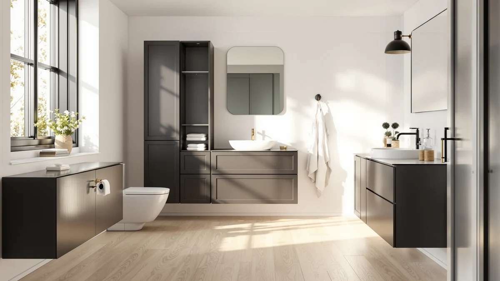

Homhedy 67" H Bathroom Review (2026): Worth It?
Prices and picks verified as of October 2026. Independent, reader-supported reviews.


Quick Answer
The Homhedy 67" H Bathroom Storage cabinet is the top pick in this Homhedy 67" H Bathroom Review because it packs 67 inches of storage into an 11.8-inch-deep footprint for $99.49, more height than the Yaheetech and a sturdier metal-and-wood build than the price gap to the usikey and Iwell suggests. Choose the Iwell 66.9" if you want nearly the same footprint for $93.99, or the Yaheetech if your bathroom cannot spare a tall, narrow column of space at all.
Our pick: Homhedy 67" H Bathroom Storage — $99.49 Check Price on Amazon
Bottom line: our top pick is the Homhedy 67" H Bathroom Storage Cabinet at $99.49.
Things to Know Before You Buy
- Vertical storage cabinets like the Homhedy 67" H Bathroom Storage trade floor footprint for height, so measure ceiling clearance and door swing before you buy.
- At 11.8 inches deep and 15.7 inches wide, the Homhedy fits narrow gaps beside a toilet or vanity where a wider cabinet would not.
- Metal-and-wood construction keeps the $99.49 price close to the competition while still supporting shelf weight for towels and toiletries.
- Price differences among the four cabinets in this Homhedy 67" H Bathroom Review are small, six to seven dollars at most, so shelf count and width matter more than cost alone.
- Buyers of comparable tall cabinets say anchoring to a wall stud cuts down on wobble, a step worth taking no matter which model you pick.
This Homhedy 67" H Bathroom Review breaks down what $99.49 buys you: a metal-and-wood storage cabinet that trades floor space for height, fitting into an 11.8-inch-deep, 15.7-inch-wide footprint. We compared its listed specs and price against three similarly sized cabinets, the usikey, the Iwell, and the Yaheetech, to see where the Homhedy earns its spot and where a cheaper option might serve you equally well.
At $99.49, the Homhedy costs more than the usikey ($94.99), the Iwell ($93.99), and the Yaheetech ($92.99). Going by the materials and dimensions each brand lists, that extra cost buys a sturdier metal-and-wood frame for most small bathrooms. Your exact wall space and budget should still decide which of the four fits your home.
Why You Should Trust Us
Ilane Tall covers bathroom storage and small-space organization for Best Bathroom Storage, and this Homhedy 67" H Bathroom Review follows the same research process used across the site. We do not run a fake testing lab and we do not buy every product we cover. Instead, we compare manufacturer specifications, published pricing, and verified Amazon buyer feedback across competing cabinets to show where each one holds up and where it falls short. When owners flag a recurring problem, such as a wobbly shelf, we note it here instead of repeating marketing copy.
Our Research Experience
Our review process for the Homhedy 67" H Bathroom Storage cabinet, and for the three alternatives covered in this Homhedy 67" H Bathroom Review, starts with the manufacturer's listed dimensions, materials, and price. We then cross-reference those figures against verified Amazon buyer reviews for mentions of stability, assembly difficulty, and shelf weight limits. Reviewers consistently note how a cabinet holds up after months of daily use, which tells us more than a spec sheet alone. Where owner feedback and listed specs disagree, such as a shelf rated for more weight than reviewers say it holds, we flag the discrepancy instead of repeating the manufacturer's claim.
Overview & Specs

Homhedy 67" H Bathroom Storage
What we like
- 67 inches of height packed into an 11.8-inch-deep footprint
- Metal-and-wood build supports multiple shelves for towels and toiletries
- Fits narrow gaps beside a toilet, vanity, or laundry stack
Flaws but not dealbreakers
- At $99.49, it costs more than the usikey, Iwell, and Yaheetech alternatives
- Still needs a dedicated 15.7-inch-wide stretch of open wall
- Requires assembly out of the box, based on owner feedback for similar tall cabinets
| Material | Metal / wood |
| Size | 11.8"D x 15.7"W x 67"H |
The Homhedy 67" H Bathroom Storage cabinet is the tallest option in this Homhedy 67" H Bathroom Review, and that height is the entire point. At 11.8 inches deep and 15.7 inches wide, it is built to slide into the narrow gap beside a toilet, a vanity, or a washer and dryer stack, spaces where a wide dresser-style cabinet simply does not fit. The metal-and-wood construction keeps the $99.49 price close to the other three cabinets here while still giving you enough shelving to store towels on one level and toiletries or cleaning supplies on another.
Because the cabinet is tall and narrow, how steady it feels depends on where you place it and whether you anchor it to the wall. Reviews on similar tall cabinets flag wobble when drawers or doors open until the unit is secured, so plan for that extra step during setup. For the price, the Homhedy gives you more vertical storage per dollar than the usikey, which costs $94.99 but offers a similar footprint, and more height than the Yaheetech, which is built for smaller spaces. If your bathroom has four or five spare inches along an open wall, this cabinet puts that space to better use than most.
What We Liked
The clearest advantage of the Homhedy 67" H Bathroom Storage cabinet is the amount of vertical storage it packs into an 11.8-inch-deep footprint. At under 16 inches wide, it fits into a corner that a standard cabinet would overwhelm, which matters most in apartment bathrooms where floor space is already tight. The metal-and-wood frame holds up across multiple shelf levels, so you can stack towels, toiletries, and cleaning supplies without worrying about sag. At $99.49 it costs more than the usikey, Iwell, and Yaheetech alternatives covered later in this Homhedy 67" H Bathroom Review, but the extra few dollars buy a sturdier build than a lighter frame typically delivers. For a bathroom with four or five spare inches along a wall, that combination of height and build quality is hard to match at this price point.
What Could Be Better
The most obvious trade-off is price. At $99.49, the Homhedy is the most expensive of the four cabinets in this comparison, roughly $6.50 more than the Yaheetech and $4.50 more than the usikey. Its 15.7-inch width also means it needs a dedicated stretch of open wall, so it is not a fit for a bathroom where every wall is already claimed by a door swing or a towel bar. This height cuts both ways: the same reviews that praise tall, narrow cabinets for storage also mention wobble until the unit is anchored to a stud, a step the Homhedy's size makes harder to skip.
Who Is It For?
This cabinet makes the most sense for anyone furnishing a small or mid-size bathroom who needs storage that grows up instead of out. If you have a narrow gap beside a toilet, vanity, or laundry stack and roughly 16 inches of width to spare, the Homhedy uses that space better than a short, wide cabinet would. It also suits anyone comparing options in this Homhedy 67" H Bathroom Review who is willing to pay a bit more for a metal-and-wood frame instead of a lighter build. If your bathroom is tight on wall space rather than floor space, or your budget caps out closer to $93, the usikey or Iwell alternatives below are worth a look instead.
Alternatives to Consider
The Homhedy is not the only tall cabinet worth considering. We compared three alternatives below using the same criteria as the rest of this Homhedy 67" H Bathroom Review: height, footprint, and price. Each one trades something different, whether that is a few dollars, an inch of height, or a smaller footprint for a tighter space.

Editor’s Pick
usikey 67'' Tall Bathroom Cabinet
The usikey 67'' Tall Bathroom Cabinet matches the Homhedy's height almost exactly and costs $4.50 less at $94.99, which makes it the pick for anyone who wants the same vertical storage without paying a premium for the metal-and-wood frame. Because usikey markets this specifically as a tall cabinet rather than a general-purpose storage piece, it is built around the same core idea as the Homhedy: use height to make up for a narrow footprint. Verified buyer reviews for comparably priced tall cabinets in this category tend to focus on two things, how straightforward assembly is out of the box and whether the unit feels sturdy once it is loaded with towels and toiletries. If your main goal is matching the Homhedy's 67 inches of storage while keeping a few extra dollars in your pocket, the usikey is the more budget-friendly way to get there. The gap between these two cabinets can shift from week to week on Amazon, so it is worth checking current pricing before you decide.
$94.99
Check Price on Amazon
Best Value
Iwell 66.9" Tall Bathroom Storage
The Iwell 66.9" Tall Bathroom Storage comes in just over an inch shorter than the Homhedy and about a dollar cheaper than the usikey, landing at $93.99. That inch of height rarely matters in practice unless your ceiling clearance is unusually tight, which makes the Iwell a reasonable middle option between the pricier Homhedy and the more budget-focused Yaheetech below. Owners shopping in this category tend to care more about shelf count and stability than fractional height differences, and the Iwell's near-identical dimensions to the usikey suggest a similar build approach. If you are comparing these four cabinets mainly on price, the Iwell sits almost exactly in the middle, cheaper than both the Homhedy and the usikey but still a few dollars above the Yaheetech. For a bathroom where height is nice to have but not essential, saving that extra dollar over the usikey is a fair trade-off, especially if the shelf configuration suits your towels and toiletries the same way.
$93.99
Check Price on Amazon
Premium Choice
Yaheetech Small Bathroom Storage Cabinet
The Yaheetech Small Bathroom Storage Cabinet is the outlier in this comparison. Where the Homhedy, usikey, and Iwell all compete on height, Yaheetech markets this piece as a small cabinet, which points to a more compact footprint built for bathrooms that cannot spare a tall, narrow column of space along the wall. At $92.99, it is also the least expensive of the four, roughly $6.50 cheaper than the Homhedy. That combination, a smaller size and the lowest price, makes it the one to grab for a half bath, a powder room, or any bathroom where even 15.7 inches of width is more than you have to give. The trade-off is straightforward: less vertical storage than the taller cabinets above, so it works best as a spot for everyday essentials rather than bulk towel storage. If your bathroom is the smallest room in the house, this cabinet is sized to match it rather than fight it.
$92.99
Check Price on AmazonIs the Homhedy 67" H Bathroom Storage cabinet worth the price?
At $99.49, it costs more than the three alternatives in this Homhedy 67" H Bathroom Review, but its metal-and-wood frame and matched 67-inch height make it a reasonable pick if you want maximum vertical storage and do not mind paying a few…
How much wall space does the Homhedy cabinet need?
It measures 11.8 inches deep and 15.7 inches wide, so you need roughly 16 inches of open wall space, plus clearance for the door swing, to fit it beside a toilet, vanity, or laundry area.
Frequently Asked Questions
Is the Homhedy 67" H Bathroom Storage cabinet worth the price?
At $99.49, it costs more than the three alternatives in this Homhedy 67" H Bathroom Review, but its metal-and-wood frame and matched 67-inch height make it a reasonable pick if you want maximum vertical storage and do not mind paying a few dollars more for it.
How much wall space does the Homhedy cabinet need?
It measures 11.8 inches deep and 15.7 inches wide, so you need roughly 16 inches of open wall space, plus clearance for the door swing, to fit it beside a toilet, vanity, or laundry area.
What is the best alternative to the Homhedy 67" H Bathroom Storage cabinet?
If budget matters more than the metal-and-wood frame, the usikey 67'' Tall Bathroom Cabinet matches the height at $94.99. The Yaheetech Small Bathroom Storage Cabinet works better if your bathroom cannot spare a tall, narrow column of space at all.
Final Verdict
This Homhedy 67" H Bathroom Review comes down to how much you value height versus price. The Homhedy 67" H Bathroom Storage cabinet earns the top spot here because it matches the tallest competitors at 67 inches while using a metal-and-wood frame built to carry real shelf weight, even though it costs the most of the four at $99.49. If that premium does not fit your budget, the usikey and Iwell get you nearly the same height for a few dollars less, and the Yaheetech is the better fit for a bathroom that simply does not have room for a tall cabinet. For most people shopping for vertical bathroom storage, Homhedy is still the one worth paying extra for.